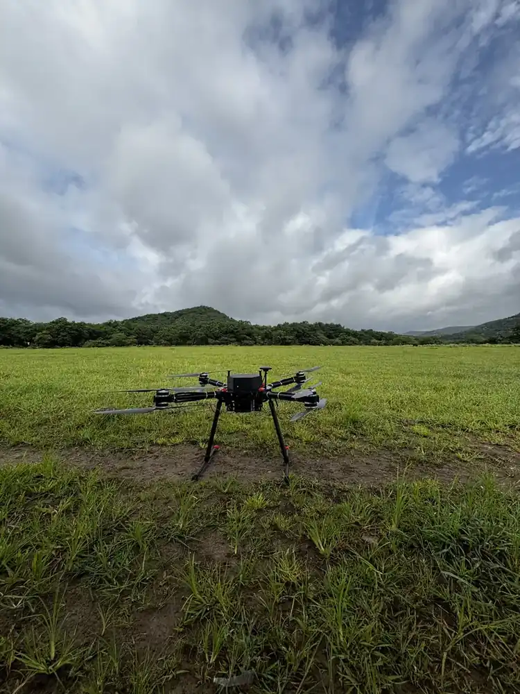

Home / Problems We Solve / Drone can’t carry your sensor
IndustryHeavy payload drones for sensors a small drone can’t lift
LiDAR units and large sensors can be too heavy for a typical drone, or cut its flight time to almost nothing.
Survey, inspection and research teams flying larger sensors.
The sensor is too heavy, so flight time collapses or the drone is unsafe to fly.
A heavy-lift platform with redundant motors and proper payload integration.
How much payload can a drone carry?
Payload decides what a drone can actually do. If the sensor you need is too heavy, flight time falls quickly, and the aircraft may be unsafe to fly at all.
It varies widely. Small drones may carry only their built-in camera, while larger platforms carry several kilograms. Always check the rated payload together with the flight time you need.
Coaxial layouts stack two motors on each arm. This adds lift and redundancy in a compact footprint, which is why they suit heavier sensors.
Who faces this problem
LiDAR and mapping teams
Larger sensors can be too heavy for small drones.
Inspection teams
Zoom and thermal payloads add weight together.
Research and defence users
Specialist sensors may need custom mounts, power and data.
Signs you have this problem
- Your preferred sensor exceeds your drone’s rated payload
- Flight time becomes too short once the sensor is on
- You are worried about losing a motor over people or assets
- You need to change payloads between missions
What to look for
- Rated payload above your total sensor weight
- Flight time measured with your payload, not empty
- Redundant lift
- Support for integrating your specific sensor
The main causes
Limited lift
Small drones have little margin once a sensor is attached.
Shorter flights
Added weight means the motors use more power.
Single points of failure
On a four-motor drone, losing one motor is serious.
Before and after
How to solve it, step by step
- 1
Weigh
List the sensor, gimbal and cabling weight.
- 2
Match
Check it against payload and flight-time needs.
- 3
Integrate
Mount and connect the payload, then balance the aircraft.
- 4
Test
Fly with your real payload and record actual flight time.
Common mistakes
- Adding up only the sensor’s weight, not mounts, gimbal and cabling
- Quoting empty flight time for a loaded mission
- Ignoring balance when fitting a new payload
- Flying near people or assets with no plan for a motor failure
Questions to ask a supplier
- What is the flight time with our exact payload?
- How does the aircraft respond if a motor fails?
- Who handles mounting, power and data connections?
- Can payloads be changed in the field?
What to use
Common questions
How much can Vision 4.0 carry?
Vision 4.0 has a 5 kg payload and a 12 kg maximum take-off mass.
Does flight time change with payload?
Yes, on any drone. Vision 4.0 is listed at 50 minutes, so ask us for figures with your actual payload.
What is a coaxial drone?
A drone with two motors on each arm, one above the other. An X8 has eight motors on four arms.
Why does extra weight reduce flight time?
The motors have to work harder to hold the aircraft up, so they draw more power and the battery lasts for less time.
Can you fit our own sensor to a drone?
Often, yes. Our Custom UAV Development covers mechanical, electrical and data integration. Share the sensor’s weight, size, power and data needs first.
Related problems
Risky, slow inspections
Climbing a tower or shutting down an array just to inspect it is slow, costly and dangerous.
Read this guideToo much drone video to watch
Long missions produce more footage than any team has time to review, so important details get missed.
Read this guideHidden faults in solar plants
A faulty panel can look normal, and checking thousands by hand takes too long.
Read this guideFacing this problem?
Tell us about your mission and our engineers will suggest the right platform or configuration.